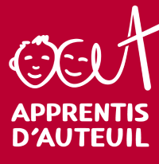

Quel est mon
parcours scolaire ?

Le
BTS SIO (Services Informatiques aux Organisations)
est le remplaçant du BTS IG, il comprend deux options :
SISR (Solutions d’infrastructure systèmes et réseaux)
Axée sur les métiers liés aux infrastructures réseaux, cette option encadre la sécurité, la maintenance et l’installation
de réseaux et équipements informatiques dans le but de former des futurs administrateurs, ou techniciens réseaux.
SLAM (Solutions logicielles et applications métiers)
Cette option est axée sur le développement d’applications et de sites web.
Elle vise à former en premier lieu des développeurs, ainsi que des webmasters, testeurs en informatique ou hot liners.
Je suis en deuxième année de BTS SIO option SISR au sein de l’ensemble scolaire Saint Gabriel de Bagneux.
Dans le cadre de ma formation j’ai mis en place diverses plateformes de déploiement et configurations réseau.